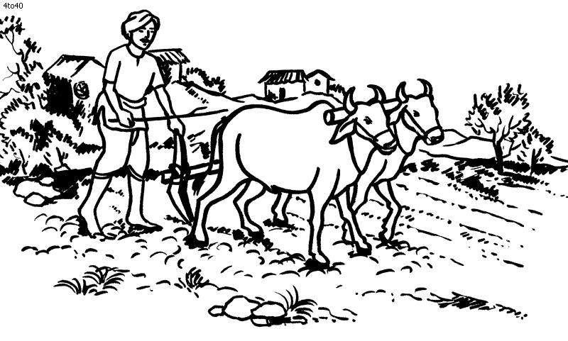

Why is farming considered for only rural areas?
The perception that farming is primarily associated with rural areas stems from historical and practical factors. However, it's important to note that modern agricultural practices are not limited to rural regions; they have evolved to include urban and peri-urban contexts as well.